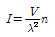
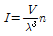
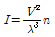
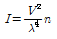
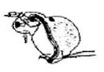
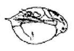
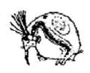
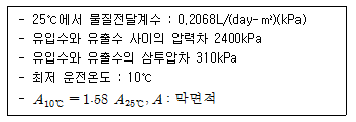
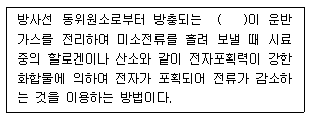
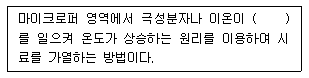

수질환경기사 (2005-08-07 기출문제)
1과목: 수질오염개론
1. 트리할로메탄에 관한 설명으로 틀린 것은?
- 물속의 유기물질이 소독제로 사용되는 염소 또는 바닷물중의 브롬과 반응하여 생성된다.
- pH가 증가할수록 생성량은 감소한다.
- 온도가 높을수록 생성량이 증가한다.
- 여름철 장마시 숲속에서 유믹물질이 상수원수로 유입될 때 다량 발생한다.
(정답률: 알수없음)

2. Ca(OH)2 200mg.L 용액의 pH는 얼마인가? (단, Ca(OH)2는 완전 해리하는 것으로 한다. Ca(OH)2의 분자량=74)
- 11.43
- 11.63
- 11.73
- 11.83
(정답률: 알수없음)
3. 다음의 조건하에서 1.5mol의 글리신(glycine CH2(NH2)COOH)의 이론적산소요구량은?
- 102g O2/ 2mol glycine
- 122g O2/ 2mol glycine
- 144g O2/ 2mol glycine
- 168g O2/ 2mol glycine
(정답률: 알수없음)
4. 초산의 이온화 상수는 20℃에서 1.75×10-5이다. 20℃에서 0.06M 초산 용액의 pH는?
- 약 3.0
- 약 3.3
- 약 3.6
- 약 3.9
(정답률: 알수없음)
5. 증류수에 3g의 아세트산을 녹이고 1ℓ의 용액으로 만들었다 이중 아세트산 이온으로 된 정도는(%)?
- 약 3.6%
- 약 2.7%
- 약 1.9%
- 약 0.8%
(정답률: 알수없음)
6. glycine(CH2(NH2)COOH) 1.5mol을 분해하는데 필요한 이론적 산소 요구량은?
- 187g O2
- 168g O2
- 155g O2
- 125g O2
(정답률: 알수없음)
7. 0.02M-KBr과 0.03M-ZnSO4 용액의 이온강도는? (단, 완전해리 기준)
- 0.⑤
- 0.10
- 0.14
- 0.20
(정답률: 알수없음)
8. 어떤 도시에서 DO 0mg/L, BOD 200mg/L, 유량 1.0m3/sec, 온도 20℃의 하수를 유량 6m3/sec인 하천에 방류하고자 한다. 방류 지점에서 몇 ㎞ 하류에서 가장 DO 농도가 작아지겠는가? (단, 하천의 온도 20℃, BOD 1mg/L, Do 9.2mg/L, 유속 V=1.8km/hr이며 혼합수의 k1=0.1/d, k2=0.2/d, 20℃에서 산소포화농도는 9.2mg/L 이다. 사용대수기준)
- 약 122
- 약 224
- 약 410
- 약 540
(정답률: 알수없음)
9. 시료의 5일 BOD가 300mg/L이고 탈산소P수값은 0.15/day (밑수는 10)이면 이 시료의 최종 BOD는?
- 335mg/L
- 345mg/L
- 355mg/L
- 365mg/L
(정답률: 알수없음)
10. 물의 특성에 대한 설명이다. 다음 기술 중 옳지 않은 것은?
- 물은 2개의 수소원자가 산소원자를 사이에 두고 104.5°의 결합각을 가진 구조로 되어 있다.
- 물은 열에 매우 안정한 화합물로 1200℃에서 약 5%-10% 정도 분해되어 수소와 산소로 된다.
- 물은 유사한 분자량의 화합물보다 비열이 매우 커 수온의 수온의 급격한 변화를 방지해 준다.
- 물의 밀도는 4℃에서 가장 크다.
(정답률: 알수없음)
11. 해수의 특징에 관한 설명으로 틀린 것은?
- 해수의 Mg/Ca 농도비는 3-4 정도로 담수에 비하여 매우 크다.
- 해수는 HCO3-를 포화시킨 상태로 되어 있다.
- 해수내 전체질소 중 35% 정도는 암모니아성질소, 유기질소 형태이다.
- 해수는 강전해질로 염소이온 35,000ppm를 함유하고 있다.
(정답률: 알수없음)
12. 어느 공장의 COD가 4600mg/ℓ, BOD5가 2100mg/ℓ이었다면 이 공장의 NBDCOD는? (단, K=BODu/BOD5=1.5)
- 1840mg/ℓ
- 1580mg/ℓ
- 1450mg/ℓ
- 1250mg/ℓ
(정답률: 알수없음)
13. 다음 수질을 가진 농업용수의 SAR값은? (단, Na+ = 1,750mg/ℓ, PO43+ = 1,500mg/ℓ, Cl- = 108mg/ℓ, Ca++ = 600mg/ℓ, Mg++ = 240mg/ℓ, NH3-N = 380mg/ℓ, Na 원자량 : 23, P 원자량 : 31, Cl 원자량 : 35.5, Ca 원자량 : 40, Mg 원자량 : 24, N 원자량 : 14)
- 10
- 12
- 15
- 18
(정답률: 알수없음)
14. 크롬 중독에 관한 설명으로 틀린 것은?
- 만성크롬중독인 경우에는 BAl등의 금속배설촉진제의 효과가 크다.
- 크롬에 의한 급속중독의 특징은 심한 신장장해를 일으키는 것이다.
- 3가 크롬은 피부흡수가 어려우나 6가 크롬은 쉽게 피부를 통과한다.
- 자연중의 크롬은 주로 3가 형태로 존자한다.
(정답률: 알수없음)
15. 질량으로 40%의 HCl을 포함하고 있는 수용액(100g)의 물농도는? (단, 용액의 밀도는 1.3g/mL이다.(원자량 : Cℓ=35.5))
- 12.4M
- 14.3M
- 19.2M
- 28.1M
(정답률: 67%)
16. 우리나라 근해의 적조(red tide)현상의 발생 조건에 대한 설명으로 알맞지 않는 것은?
- 플랑크톤의 증식을 위해 햇빛이 강하고 수온이 높을때 많이 발생한다.
- 여름청 갈수기에 수온상승에 따른 상승류 현상으로 영양분 농도가 높아질 때 잘 발생된다.
- 정체수역에서 많이 발생된다.
- 질소, 인 등의 영양분이 풍부하고 규소, 칼슘, 마그네슘 등의 영양염과 더불어 미량의 금속, 비타민 등이 존재할 때 많이 발생한다.
(정답률: 알수없음)
17. 다음 중 환원상태가 되면 나중에 반응이 일어나는 것은? (단, ORP값 기준)
- SO42- → S2-
- NO2- → NH3
- Fe3+ → Fe2+
- NO3- → NO2-
(정답률: 58%)
18. 원핵세포와 진핵세포간의 중요한 차이점으로 틀린 것은?
- 세포핵(유사분열) : 진핵세포 - 있음, 원핵세표 - 없음
- 세포질(막상구조) : 진핵세포 - 있음, 원핵세표 - 없음
- 세포질(리소좀) : 진핵세포 - 있음, 원핵세표 - 없음
- 세포질(편모) : 진핵세포 - 있음, 원핵세표 - 없음
(정답률: 34%)
19. 산(acid)과 염기(base)에 관한 설명으로 틀린 것은?
- 산은 활성을 띤 금속과 반응하여 원소상태의 수소를 내어 놓는다.
- 산의 용액을 전기분해하면 음극에서 원소상태의 수소가 발생된다.
- 대부분의 비금속은 산성산화물로서 염기에 녹거나 산성용액을 형성한다.
- 염기는 전자쌍을 받는 화학종으로, 산은 전자쌍을 주는 화학종으로 구분할 수 있다.
(정답률: 36%)
20. 대장균수가 감소하는 율은 현재 있는 대장균수에 비례한다고 한다. 어느 시료의 대장균수가 5,000/㎖이라면 대장균수가 10/㎖이 될 때까지 필요한 시간은? (단, 1차 반응 기준, 대장균의 반감기는 1시간이다.)
- 6시간
- 7시간
- 9시간
- 12시간
(정답률: 알수없음)
2과목: 상하수도계획
21. 도수관 설계시 자연유하식인 경우 평균유속의 최소한도 기준은?
- 0.3m/sec
- 0.5m/sec
- 1.5m/sec
- 3.0m/sec
(정답률: 알수없음)
22. 하수를 처리장으로 유입시키는 펌프중 스크류펌프의 단점이라 볼 수 없는 것은?
- 양정에 제한이 있다.
- 일반펌프에 비하여 펌프가 크게 된다.
- 토출측의 수로를 압력관으로 할 수 없다.
- 수중 협잡물의 유입으로 폐쇄가 자주 발생한다.
(정답률: 알수없음)
23. 유역면적이 1.2㎢, 유출계수가 0.2인 산림지역에 강우가 2.0mm/min 율로 내였다면 우수유출량은? (단, 합리식 적용)
- 4m3/sec
- 6m3/sec
- 8m3/sec
- 10m3/sec
(정답률: 알수없음)
24. 하천수를 수원으로 하는 경우, 취수시설인 ‘취수보’에 관한 설명과 가장 거리가 먼 것은?
- 안정된 취수와 침사효과가 큰 것이 특징이다.
- 하첨의 흐름이 안정된 경우에 적합하다.
- 하천의 유황이 크게 변화는 장소에는 적당하지 않다.
- 개발이 진행된 하천에서 정확한 취수조정이 필요한 경우에 적합하다.
(정답률: 알수없음)
25. 상수도 기본계획 수립시 기본적 사항인 계획1일최대급수량에 관한 내용으로 적절한 것은?
- 계획1일평균사용수량/계획유효율
- 계획1일평균사용수량/계획부하율
- 계획1일평균급수량/계획유효율
- 계획1일평균급수량/계획부하율
(정답률: 알수없음)
26. 상수처리시설중 플록형성지의 플록형성표준시간은?
- 5~10분간
- 10~20분간
- 20~40분간
- 40~60분간
(정답률: 알수없음)
27. 수도시설에서 제어용으로 사용하는 밸브로 널리 사용되는 것은?
- 상수도용 글로브밸브
- 상수도용 체크밸브
- 상수도용 버터플라이밸브
- 상수도용 풋밸브
(정답률: 알수없음)
28. 여과시(濾過沙)의 성질이 아래와 같다. 균등계수는? (10% 통과율 입경 = 0.3mm, 60% 통과율 입경 = 0.6mm 80%통과율 입경 = 3mm)
- 10
- 5
- 2
- 0.5
(정답률: 알수없음)
29. 다음 중 하수용 펌프 흡입구의 표준유속은?
- 0.5~1.0m/sec
- 1.0~1.5m/sec
- 1.5~3.0m/sec
- 3.0~1.0m/sec
(정답률: 20%)
30. 지름 1000mm의 원심력 철근 콘크리트관이 포설되어 있다. 만관으로 흐를 때의 유량은? (단, 조도계수 = 0.015, 동수구배 = 0.001, Manning 공식 이용)
- 4.17m3/s
- 2.45m3/s
- 1.67m3/s
- 0.66m3/s
(정답률: 알수없음)
31. 상수의 처리대상물질이 침식성유리탄산(무기물, 용해성성분)인 경우 처리방법으로 가장 적절한 것은?
- 폭기, 알칼리제 처리
- 정석연화, 응석침전
- 응집침전, 활성탄
- 오존, 급속여과방식
(정답률: 알수없음)
32. 수도용 폴리에틸렌관의 장, 단점으로 틀린 것은?
- 열이나 자외선에 약하다.
- 용착접속으로 일체화할 수 있고 지반변동에 유연하게 대응할수 있다.
- 유기용제에 의한 침투에 조심해야 한다.
- 융착접속으로 우천시나 용천수지반에서의 시공이 용이하다.
(정답률: 알수없음)
33. 양정변화에 대하여 수량의 변동이 적고 또 수량변동에 대하여 동력의 변화도 적으므로 우수용 펌프등 수위변동이 큰 곳에 적합한 펌프는?
- 원심펌프
- 사류펌프
- 출류펌프
- 스크류펌프
(정답률: 42%)
34. 상수의 급속여과 설계기준에 대한 설명중 틀린 것은?
- 여과속도는 120~150m/일을 표준으로 한다.
- 모래층의두께는 여과사의 유효경이 0.45~0.7mm인 범위인 경우에는 60~70cm를 표준으로 한다.
- 여과면적은 계획 정수량을 여과속도로 나누어 구한다.
- 1지의 여과면적은 250m2 이하로 한다.
(정답률: 알수없음)
35. 상수도 시설중 침사지에 관한 설명으로 틀린 것은?
- 위치는 가능한 한 취수구에 근접하여 제내지에 설치한다.
- 지의 유효수심은 2~3m를 표준으로 한다.
- 지의 상단높이는 고수위보다 0.6~1m의 여유고를 둔다.
- 지내평균유속은 2~7cm/sec를 표준으로 한다.
(정답률: 알수없음)
36. 상수도 시설 설계시 사용되는 주요 하중 및 외력에 관한 설명으로 틀린 것은?
- 풍압은 속도압에 풍력계수를 곱하여 산정한다.
- 적설하중은 눈의 단위중량에 그 지방에서의 수직최심 적설량을 곱하여 산정한다.
- 양압력은 구조물의 전후에 수위차가 생기는 경우에 고려한다.
- 얼음 두게에 비하여 결빙 면이 큰 구조물의 설계에는 빙압을 고려한다.
(정답률: 알수없음)
37. 펌프의 토출량은 200m3/min이며 흡입구의 유속이 20m/sec인 경우에 펌프의 흡입구경(mm)은?
- 462
- 421
- 327
- 312
(정답률: 77%)
38. 우물의 양수량 결정시 사용되는 ‘적정양수량’의 정의로 알맞은 것은?
- 최대양수량의 70%이하의 양수량
- 한계양수량의 70%이하의 양수량
- 안전양수량의 70%이하의 양수량
- 단계양수량의 70%이하의 양수량
(정답률: 알수없음)
39. 상수도관 부식의 종류중 매크로셀부식으로 분류되지 않는 것은?
- 전철의 미주전류
- 이종금속
- 콘크리트ㆍ토양
- 산소농담(통기차)
(정답률: 알수없음)
40. 다음 펌프 중 가장 비교회전도(Ns)를 나타내는 것은?
- 터어빈펌프
- 사류펌프
- 축류펌프
- 원심펌프
(정답률: 알수없음)
3과목: 수질오염방지기술
41. 고도 수처리를 하기 위한 방법인 ‘정밀여과’에 관한 설명으로 틀린 것은?
- 비대칭형 다공성 skin형막 형태이다.
- 분리형태는 Pore size 및 흡착현상에 기인한 체걸름이다.
- 구동력은 정수압차이다.
- 전자공업의 초순수제조, 무균수제조, 식품의 무균여과에 적용한다.
(정답률: 46%)
42. 어느 도시 하수처리장의 1차 침전지에서의 SS제거율이 약 38% 이다. 이곳에 유입되는 하수이 SS가 180mg/ℓ이고, 유량이 4,000m3/day라면 1차 침전지에서 제거되는 슬러지의 양은? (단, 1차 슬러지는 5%의 고형물을 함유하며, 슬러지의 비중은 1.1이다.)
- 4.736m3/day
- 4.974m3/day
- 5.313m3/day
- 5.472m3/day
(정답률: 알수없음)
43. 유량이 3,000m3/일 이고 BOD농도가 400mg/ℓ인 폐수를 활성슬러지법으로 처리하고 있다. 포기시간을 8시간으로 처리한 결과 처리수의 BOD 및 SS농도가 각각 30mg/ℓ이었다. MLSS농도는 4,000mg/ℓ이었으며, 폐슬러지 생산량은 50m3/일 이었다. 폐슬러지 농도는 0.9%이며, 세포증식계수가 0.75인 경우 내호흡율(Kd)은?
- 약 0.⑤2/일
- 약 0.061/일
- 약 0.065/일
- 약 0.074/일
(정답률: 알수없음)
44. 1차 처리결과 생성되는 슬러지를 분석한 결과 함수율이 90%, 고형물중 무기잔류 고형물질이 30%, 유기성 고형물질이 70%, 유기성 고형물질의 비중 1.1, 무기성 고형물질의 비중이 2.2로 판정되었다. 이 때 슬러지의 비중은?
- 0.953
- 1.014
- 1.023
- 1.⑤4
(정답률: 알수없음)
45. 다음 조건하에서 Monodtlr(Michaelis-Menten식 이용)을 사용한 세포의 비증식속도(Specific growth rate)는? (단, 제한기질농도 200mg/ℓ 1/2포화농도 50mg/ℓ, 세포의 비증식속도 최대치 0.3hr-1)
- 0.08hr-1
- 0.16hr-1
- 0.19hr-1
- 0.24hr-1
(정답률: 40%)
46. 생물학적 원리를 이용하여 질소, 인을 제거하는 공정인 A2/O 공법에 관한 설명으로 틀린 것은?
- 포기조에서 질산화를 통하여 생성된 질산성질소를 혐기조로 내부반송한다.
- A/O공법에 비하여 탈질성능이 우수하다.
- 슬러지 처리계통에서 일이 재용출될 가능성이 있으며 동절기에는 성능이 불안정하게 된다.
- 폐슬러지내 인의 함량이 3-5% 정도로 높아 비료가치가 있다.
(정답률: 알수없음)
47. 혐기성공법 중 ‘혐기성 유동성’의 장점이라 볼 수 없는 것은?
- 짧은 수리학적 체류시간이 높은 부하율로 운전이 가능하다.
- 유출수의 재순환이 필요 없으므로 공정이 간단하다.
- 매질의 첨가나 제거가 쉽다.
- 독성물질에 대한 완충능력이 좋다.
(정답률: 알수없음)
48. 유량이 5000m3/day이며 BOD가 200mg/ℓ인 폐수를 폭기조의 MLSS 4,000mg/ℓ, 1일 폐기 슬러지를 400kg/day, 유출수의 BOD 농도가 20mg/ℓ, 폭기조 체류시간은 6시간으로 운전시킬 때 슬러지 일령(SRT)은? (단, 반송슬러지 농도는 4%라 가정함)
- 8일
- 10일
- 12일
- 14일
(정답률: 알수없음)
49. 질산염(NO3-) 20mg/L를 탈질시키는데 소모되는 메탄올 (CH3OH)의 양은?
- 14.4mg/L
- 12.9mg/L
- 10.8mg/L
- 8.6mg/L
(정답률: 알수없음)
50. 다음 중 부유입자에 의한 백색광 산란을 설명하는 Raleigh의 법칙을 가장 알맞게 나타낸 공식은? (단, ㅣ: 산란광의 세기, V : 입자의 체적, λ : 빛의 파장, n : 입자의 수)




(정답률: 31%)
51. 살수여상의 종류중 초벌살수여상에 관한 내용으로 틀린 것은?
- 여재는 플라스틱등이 사용되며 생물막 탈리는 연속적으로 발생된다.
- 저율상수여상에 바하여 여상파리가 많이 발생한다.
- BOD5제거율이 저율 살수여상에 비하여 낮다.
- 유충수의 질산화가 불량하다.
(정답률: 알수없음)
52. 다음과 같은 조건에서 적당한 침사지의 유효길이로서 옳은 것은? (조건) 평균유속 0.3, 유효부심 1.0m 유입량 1.0m3/sec, 수면적부하 21000m3/m2.day
- 13.0m
- 14.4m
- 17.2m
- 20.9m
(정답률: 알수없음)
53. 다음 중 바이오 센서에 사용되기도 하는 물벼룩(Daphnia)과 가장 가까운 것은?



(정답률: 64%)
54. Fenton산화방식에 대한 설명으로 틀린 것은?
- pH 3-5범위인 산성영역에서 효과적이다.
- COD는 담소하나 BOD는 감소되지 않고 증가되는 경우가 있다.
- 처리공정에서 pH조절은 펜톤시약을 첨가한 후 조정하는 것이 효과적이다.
- 철염은 과량의 과산화수소수로 존재할 때 단계적으로 첨가하는 것이 효과적이다.
(정답률: 알수없음)
55. 200mg/L의 에탄올(C2H5OH)만을 함유하는 1000m3/day의 공장폐수를 재래식활성슬러지 공법으로 처리하는 경우에 이론적으로 첨가되어야 하는 질소의 량(kg/day)은? (단, BOD : N = 100: 5)
- 약 21
- 약 36
- 약 43
- 약 53
(정답률: 알수없음)
56. 역삼투 장치로 하루에 1000m3의 3차처리된 유출수를 탈염시키고자 한다. 요구되는 막면적 (m2)은?

- 약 3700
- 약 4300
- 약 5100
- 5600
(정답률: 알수없음)
57. 공장폐수 중 시안함유폐수 처리법인 ‘알칼리염소법’에 관한 설명과 가장 거리가 먼 것은?
- 시안폐수처리에서 가장 일반적인 방법이다.
- 산화에 의해서 분해되어 비독성의 화합물로 되는 것으로 반응속도가 빠르고 조정하기도 쉽다.
- 아연이나 카드뮴의 시안화착염은 산화분해가 어려워 특히 주의하여야 한다.
- 공장규모의 대소에 불구하고 시안폐수의 처리에는 가장 안전하고 확실하다.
(정답률: 22%)
58. 침전하는 입자들이 너무 가까이 있어서 입자간의 힘이 이웃입자의 침전을 방해하게 되고, 동일한 속도로 침전하며 활성슬러지공법의 최종침전조 중간 깊이에서 일어나는 침전은?
- Ⅰ형침전(독립침전)
- Ⅱ형침전(응집침전)
- Ⅲ형침전(지역침전)
- Ⅳ형침전(압축침전)
(정답률: 46%)
59. 어느 폐수 처리시설에서 직경 0.01cm, 비중 2.5인 입자를 중력 침강시켜 제거하고자 한다. 수은 4.0℃에서 물의 비중은 1.0, 점성계수는 1.31×10-2g/cmㆍsec 일 때, 입자의 침강속도는?
- 12.2m/hr
- 22.4m/hr
- 31.6m/hr
- 37.6m/hr
(정답률: 알수없음)
60. 초심층폭기법(Deep Shaft Aeration System)에 대한 설명 중 틀린 것은?
- 기포와 미생물이 접촉하는 시간이 표준활성슬러지법보다 길어서 산소전달 효율이 높다.
- 순환류의 유속이 매우 빠르기 때문에 난류상태가 되어 산소전달율을 증가시킨다.
- F/M비는 표준활성슬러지공법에 비하여 낮게 운전한다.
- 표준활성슬러지공법에 비하여 MLSSShd도를 높게 운전한다.
(정답률: 22%)
4과목: 수질오염공정시험기준
61. 전기전도도 측정시 전도도표준액 조제에 사용되는 시약은?
- 염화칼륨
- 염화나트륨
- 염화암모늄
- 염화제이철
(정답률: 알수없음)
62. 다음은 가스크로마토 그래피법의 전자 포획형 검출기에 관한 설명이다. ( )안에 알맞은 내용은?

- α(알파)선
- β(베타)선
- γ(감마)선
- X선
(정답률: 알수없음)
63. 흡광광도법을 이용한 체놀류 측정원리는 증류한 시료에 [염화암모늄 - 암모니아 (①)을 넣어 pH(②)으로 조절한 가음 4-아미노안티피린과 페리시안칼륨을 넣어 생성되는 (③)의 안티피린계 색조의 흡광도를 측정]하는 방법이다. ( )안에 알맞은 것은?
- 완충액 - 12 - 황색
- 완충액 - 10 - 적색
- 혼액 - 4 - 황갈색
- 혼액 - 2 - 적자색
(정답률: 알수없음)
64. 식물성플랑크톤특정을 위해 시료를 보전할 때 침강성이 좋지 않은 남조류나 파괴되기 쉬운 와편모조류를 보전하는 방법으로 가장 적절한 것은?
- 포르말린 용액을 1~2V/V% 가하여 보전한다.
- 포르말린 용액을 3~5V/V% 가하여 보전한다.
- 루골 용액을 1~2V/V% 가하여 보전한다.
- 루골 용액을 3~5V/V% 가하여 보전한다.
(정답률: 30%)
65. 용존산소를 윙클러-아지드화나트륨변법으로 측정하고자 한다. Fe(Ⅲ) (100~200mg/L)이 함유되어 있는 시료를 전처리할 때 사용되는 시약으로 적절한 것은?
- 칼륨면반용액
- 황산망간용액
- 불화칼륨용액
- 슬퍼민산용액
(정답률: 알수없음)
66. 다음 설명 줄 틀린 것은?
- 연속특정 도는 현장측정의 목적으로 사용하는 측정기기는 공정시험방법에 의한 측정값과의 정확한 보정을 행한 후 사용 할 수 있다.
- 정량범위라 함은 본 시험방법에 따라 시험할 경우 표준편차율 10% 이하에서 측정할 수 있는 정량ㅎ한과 정량상한의 범위를 말한다.
- 표준편차율이라 함은 평균값을 표준편차로 나눈 값의 백분율로서 반복조작시의 편차를 상대적으로 표시한 것을 말한다.
- 유효측정농도는 지정된 사용방법에 따라 시험하였을 경우 그 시험방법에 대한 최소정량한계를 의미하며, 그 미만은 불검출된 것으로 간주한다.
(정답률: 알수없음)
67. 퍼지ㆍ트랩-가스크로마토그래프(질량분석법)으로 분석하는 휘발성 저급탄화수소와 가장 거리가 먼 것은?
- 벤젠
- 사염화탄소
- 트리클로로메탄
- 1,1-디클로로에틸렌
(정답률: 알수없음)
68. 메틸렌블로우와 반응하여 생성된 청색의 복합체를 클롤로포름으로 추출하여 클로로포름층의 흡광도를 650mm에서 측정하여 정량하는 수질오염물질은?
- 음이온 계면활성제
- 유기인
- 인산염인
- 폴리클로리네이티드 비페닐
(정답률: 43%)
69. 공정시험법상 질산성질소의 측정방법과 가장 거리가 먼 것은?
- 이온크로마토그래피법
- 자외선 흡광광도법
- 데발다합금 환원증류법
- 카드뮴-구리칼럼 환원법
(정답률: 알수없음)
70. 총대장균군 측정시에 사용하는 배양기의 배양온도기준으로 가장 알맞은 것은?
- 20±1℃
- 25±0.5℃
- 30±1℃
- 35±0.5℃
(정답률: 알수없음)
71. 시안화합물의 정량분석(흡광광도법)시 초산아연용액을 넣어 제거하는 방해물질은?
- 유기염화물
- 철, 망간
- 잔류염소
- 황화합물
(정답률: 37%)
72. 가스크로마토 그래피법으로 인 또는 유황화합물을 선택적으로 검출하려 할 때 사용되는 검출기는?
- ECO
- FID
- FRD
- TCD
(정답률: 알수없음)
73. 폐수 30㎖를 이용하여 100℃에 있어서의 KMnO4에 의한 COD를 측정했을 때, 0.025N-KMnO4 용액의 역적정량은 4㎖이었다. 이 폐수의 COD는 몇 mg/ℓ 인가? (단, 0.025-KMnO4 용액의 f=1,000이고, 공시험치는 1㎖이었다.)
- 10mg/ℓ
- 15mg/ℓ
- 20mg/ℓ
- 30mg/ℓ
(정답률: 알수없음)
74. 시료의 최대보존기간이 가장 짧은 항목은?
- 6가크롬
- 셀레늄
- 수은
- 클로로필a
(정답률: 20%)
75. 6가 크롬시험법중 흡광광도법에서 바탕실험을 위해 크롬산에 95% 에탄올을 넣어주는 이유는?
- 3가크롬을 6가크롬으로 산화시키기 위해
- 6가크롬을 3가크롬으로 환원시키기 위해
- 디페닐카르바지드용액의 발색을 선명하게 하기 위해
- 시료중 방해물질을 산화시키기 위해
(정답률: 20%)
76. lo 단색광이 정색액을 통과할 때 그 빛이 90%가 투과된다면 이 경우 흡광도는?
- 약 1.0
- 약 0.3
- 약 0.1
- 약 0.⑤
(정답률: 알수없음)
77. 원자흡광광도법으로 셀레늄을 측정할 때 수소화셀레늄을 발생시키기 위해 염산산성하의 시료에 주입하는 것은?
- 염화제일주석 용액
- 아연분말
- 요오드화나트륨 분말
- 수산화나트륨 용액
(정답률: 알수없음)
78. 클로로필 a량을 계산할 때 클로로필 색소를 추출하여 흡광도를 측정한다. 이 때 색소 추출에 사용하는 용액은?
- 아세톤용액
- 클로로포름용액
- 에탄올용액
- 포르말린용액
(정답률: 알수없음)
79. 다음은 마이크로파에 의한 유기물분해에 관한 내용이다. ( )안에 알맞은 내용은?

- 쌍극지 모멘트, 이온전도
- 이온산화, 마그네트론화
- 극성화, 열화 모멘트
- 비극성화, 이온산화
(정답률: 19%)
80. 어느 하천의 일정장소에서 시료를 채수하고자 한다. 그 단면의 수심이 2m미만 일 때 채수 위치는 수면으로부터 수심의 어느 위치인가?
- 1/2 지점
- 1/3 지점
- 1/3 지점과 2/3 지점
- 수면상과 1/2 지점
(정답률: 알수없음)
5과목: 수질환경관계법규
81. 수질오염 상태를 파악하기 위해 고시하는 측정망 설치계획에 포함되어야 하는 사항이 아닌 것은?
- 측정망 설치기간
- 측정망 설치시기
- 측정망 배치도
- 측정소를 설치할 토지 또는 건축물의 위치 및 면적
(정답률: 19%)
82. 다음 용어의 정의로 알맞지 않은 것은?
- 폐수 : 물에 기체성, 액체성 또는 고체성의 수질오염물질이 혼입되어 그대로 사용할 수 없는 물
- 수질오염물질 : 수질오염의 요인이 되는 물질로서 환경부령으로 정하는 것
- 기타 수질오염원 : 폐수배출시설외에 수질오염물질을 배출하는 시설 또는 장소로서 환경부령이 정하는 것
- 특정수질유해물질 : 사람의 건강 재산이나 동식물의 생육에 직접 또는 간접으로 위해를 줄 우려가 있는 수질오염물질로서 환경부령으로 정하는 것
(정답률: 8%)
83. 폐수종말처리시설의 방류수수질기준으로 알맞은 화학적 산소요구량(mg/L) 기준은? (단, 2007. 12. 31까지 수질기준)
- 20 이하
- 30 이하
- 40 이하
- 50 이하
(정답률: 19%)
84. 사업장별 환경기술인 자격기준에 관한 내용으로 틀린 것은?
- 대기환경기술인으로 임명된 자가 수질환경기술인의 자격을 함께 갖춘 경우에는 수질환경기술인을 겸임할 수 있다.
- 공동방지시성에 있어서 폐수배출량이 1종 및 2종 사업장 규모인 경우에는 3종사업장에 해당되는 환경기술인을 둘 수 있다.
- 연간 90일 미만 조업하는 1, 2, 3종 사업장은 4,5종사업장의 환경기술인을 선임할 수 있다.
- 1종 및 2종사업장중 1개월간 실제 작업한 날만을 계산하여 1일 평균 17시간 이상 작업하는 경우에는 해당사업장은 환경기술인을 각 2인 이상을 두어야 한다.
(정답률: 50%)
85. 위임업무보고사한중 보고횟수가 연2회에 해당되는 업무가 아닌 것은?
- 과징금 부과실적
- 과징금 징수실적 및 체납처분 현황
- 환경기술인 자격별, 업종멸 신고상황
- 기타수질오염원 현황
(정답률: 알수없음)
86. 종말처리시설 종류병 배수설비의 설치방법 및 구조기준으로 틀린 것은?
- 배수관의 관경은 150mm 이상으로 하여야 한다.
- 배수관은 우수관과 분리하여 우수가 혼합되지 아니하도록 설치하여야 한다.
- 배수관 입구에는 유효간격 5mm이하의 스크린을 설치하여야 한다.
- 유량계 및 각종 계량기 설치는 배수설비의 부대시설로 본다.
(정답률: 알수없음)
87. 초과부과금부과대상 오염물질이 아닌 것은?
- 트리크로롤에틸렌
- 디클로로메탄
- 망간 및 그 화합물
- 총질소
(정답률: 알수없음)
88. 공공수역에 분뇨, 축산폐수를 버린 행위를 한 자에 대한 벌칙기준은?
- 5년이하의 징역 도는 3천만원이하의 벌금
- 3년이하의 징역 도는 1천5백만원이하의 벌금
- 2년이하의 징역 도는 1천만원이하의 벌금
- 1년이하의 징역 도는 5백만원이하의 벌금
(정답률: 알수없음)
89. 교육대상자의 선발 및 등록에 관한 설명 중 맞는 것은?
- 환경부장관은 교육계획을 매년 12월 31일까지 시ㆍ도지사 등에게 통보하여야 한다.
- 교육대상자로 선발된 기술요원 또는 환경기술인은 교육개시 30일전까지 당해 교육기관에 등록하여야 한다.
- 시ㆍ도지사 등이 교육대상자를 선발한 때에는 당해 교육대상자를 고용한 자에게 지체없이 그 뜻을 통지하여야 한다.
- 시ㆍ도지사 등은 관할구역안의 교육대상자를 선발하여 그 명단을 당해 교육과정 기시 30일 전 까지 교육기관의 장에게 통보하여야 한다.
(정답률: 알수없음)
90. 자연공원법 규정에 위한 자여농원이 공원구역에 폐수배출시성에서 1일 폐수배출량이 1,000m3 발생하는 경우, 화학적 산소요구량(mg/L) 배출허용기준은?
- 40이하
- 50이하
- 70이하
- 90이하
(정답률: 알수없음)
91. 다음 중 온도(℃)의 “청정”지역 폐수배출시설 배출 허용 기준치는?
- 25이하
- 30이하
- 35이하
- 40이하
(정답률: 0%)
92. 수질환경보전법상 기술요원 도는 환경관리인이 이수하여야 하는 교육과정을 알맞게 짝지은 것은?
- 측정기술요원과정 - 환경관리인과정
- 방지시설기술요원과정 - 환경관리인과정
- 배출시설기술요원과정 - 환경관리인과정
- 폐수처리기술요원과정 - 환경관리인과정
(정답률: 알수없음)
93. 수질오염방지시설 중 생물화학적 처리시설이 아닌 것은?
- 폭기시설
- 살균시설
- 산화시설(산화조 또는 산화지)
- 접촉조
(정답률: 알수없음)
94. 폐수처리방법이 물리적 또는 화학적 처리방법인 경우 가장 적정한 시운전 기간은?
- 가동개시일부터 30일
- 가동개시일부터 50일
- 가동개시일부터 70일
- 가동개시일부터 90일
(정답률: 알수없음)
95. 환경부장관 또는 시도지사가 측정망 설치계획의 결정고시로 인하여 허가를 받은 것으로 볼 수 있는 사항과 가장 거리가 먼 것은?
- 하천점용의 허가
- 도로용의 허가
- 공공수역용의 허가
- 하천공사시행의 허가
(정답률: 알수없음)
96. 폐수배출시설에 대한 배출부과금을 부과하는 경우로서 기본부과금의 납부통지는 당해 부과기간에 대한 확정배출량의 자료제출기간 종료후 몇 일 이내에 하여야 하는가?
- 10일
- 15일
- 30일
- 60일
(정답률: 알수없음)
97. 하천, 호수에서 자동차를 세차하는 행위를 한 자에 대한 과채료 처분기준으로 적절한 것은?
- 100만원 이하의 과태료
- 50만원 이하의 과태료
- 30만원 이하의 과태료
- 10만원 이하의 과태료
(정답률: 알수없음)
98. 조업정지 명령에 대신하여 과징금을 징수할 수 있는 시설과 가장 거리가 먼 것은?
- 방위산업에 관한 특별조치법 규정에 의한 방위산업체의 배출시설
- 수도법 규정에 의한 수도시설
- 도시가스사업법 규정에 의한 가스공급시설
- 석유사업법 규정에 의한 석유비축계획에 따라 설치된 석유비축시설
(정답률: 40%)
99. 해역(등급 : 참돔, 빙어 및 미역 등 수산생물의 서식, 양식 및 해수욕에 적합한 수질)의 용존산소량(mg/L)의 환경기준으로 알맞은 것은? (단, 생활환경 기준)
- 5.0 이상
- 5.5 이상
- 7.0 이상
- 7.5 이상
(정답률: 15%)
100. 수질환경보전법의 규정에 의하여 폐수배출시설설치허가를 신청하고자 할 경우 첨부서류에 해당하지 않는 것은?
- 폐수배출시설의 위치도
- 원료 및 용수의 사용명세
- 방지시설의 배치도
- 폐수배출공정흐름도
(정답률: 알수없음)
트리할로메탄은 물속의 유기물질이 소독제로 사용되는 염소 또는 바닷물중의 브롬과 반응하여 생성된다. 그리고 pH가 증가할수록 생성량은 감소한다. 이는 pH가 증가하면 염소 또는 브롬과의 반응이 더 어려워지기 때문이다. 여름철 장마시 숲속에서 유기물질이 상수원수로 유입될 때 다량 발생한다는 것은 맞지만, 온도가 높을수록 생성량이 증가한다는 것은 틀린 설명이다.